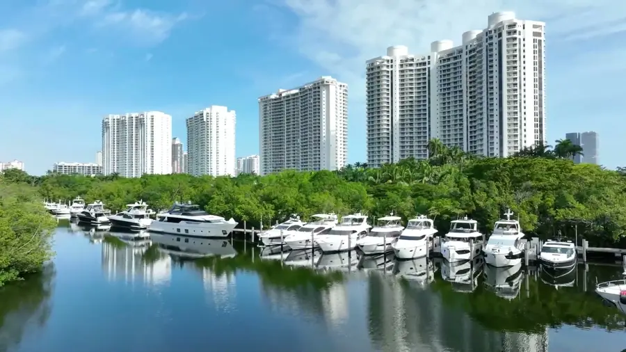

Home / Reviews
Reviews
What boaters say.
Real Google reviews from captains, crews and members at Williams Island Marina.
248 reviews on Google
★★★★★I had my yacht there for 3 months and I felt safe with everything working well. The people there are very helpful and hand on. Kléber Miranda the dock master was always there for me and my crew. Will return next year.
★★★★★As a relatively new member, the overall experience has been outstanding! The amenities are first class, the employees are always courteous and ready to help. Special mention for Karline at the Last Coconut pool bar and Kleber the Dockmaster which from day one has been extremely helpful!
★★★★★Great place to bring the family for a staycation, dock master Kleber and his team took great care of us. Many amenities to choose from, prices are very reasonable for the level of service.
★★★★★I have been bringing my boss’ boats to William’s Island for the last 5 years or so for extended periods. I have to say that the team here are the most friendliest in town, from the dockhands to management. They always have smile and are most helpful and kind, and it's nice to see mostly the same team from year to year. They keep the place spotless and do pumpouts and lines always with a smile. I know that if I’m not onboard, they keep an eye on my vessel to make sure that there is nothing out of sort or I will get a phone call. Work is allowed to be performed onboard - obviously to an extent, but it’s always made sure that it does not interfere with the neighbours. The marina office, gym, and marina amenities are beautiful and seem very new. My boss loves it here, from the restaurants to the pool and spa, to just the peacefulness of the area. It's Miami but doesn't seem like Miami. We will be back next winter….
★★★★★I’ve been in Williams Island Marina for about 9 months now and only have good things to say. Kleber is always quick to respond when I need something. Kadeem, Corbin and Jay are always happy to help with a smile on their face! The location is also very nice and always being improved. Very happy where we are.
★★★★★We stayed at this marina one night - it is a very nice marina, well maintained. Kadeem is first class. very helpful and accommodating. You can access a couple restaurants, gym/spa, pool, tennis courts, etc that are close by and part of the condo association here.
★★★★★Conozco marinas desde Newport RI hasta Key West Fl, y esta es la mejor, el servicio del Dock Máster es excelente, la limpieza y el orden de maravilla servicios como el pump out y la recolecta de basura muy buenos, la calidad de la corriente eléctrica perfecta nunca nos quedamos sin energía. Los precio muy razonables a lo que obtenemos. Su staff siempre alertas para ayudar en todo.
★★★★★Una experiencia inigualable, la comodidad y atención de todos los miembros del personal de la marina, algo confortable, con las mejores instalaciones, un lujo.
★★★★★Recently I met Kadeem, he works at marina’s office, he treated me wonderful, solve all my problems that’s why I recommend him very much
From the guest book
Signed by the boats.
“We loved our stay and can't wait to come back.”
Special K
“Gorgeous marina. Highly recommend.”
K'os
“Beautiful marina, the facilities were spotless and well-maintained. Everything we needed was just a few steps from our slip!”
Sea Memory
“Gorgeous Marina.”
Sea La Vie
Join them
Request your slip.
Check your fit and send a request in under a minute.